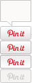

jQuery Social Share Buttons Plugin Documentation
Thank you for purchasing the jQuery Social Share Buttons plugin.
If you have any questions that are beyond the scope of this help file, please feel free to send us an email using the contact form on our codecanyon profile page. We are also available for hire if you require any customisations or assistance with jQuery or Wordpress.
Setting Up The Plugin
Installation
The plugin requires the jQuery javascript library. So first thing is to add the jquery library from your preferred source. There are no specific requirements for this plugin so you are free to use any of the latest versions:
<script type="text/javascript" src="http://ajax.googleapis.com/ajax/libs/jquery/1.7.1/jquery.min.js"></script>
Once you have loaded the jQuery library you need to include the social share buttons plugin file:
<script type="text/javascript" src="js/jquery.social.share.2.2.js"></script>
Finally, if you want to use the default styles then either include the social.css file or copy/paste the CSS code to your site's style sheet:
<link rel="stylesheet" type="text/css" href="css/social.css" media="all" />
The plugin is now ready to use!
Quick Start
The easiest way to get started is to just initialize the plugin with the default settings.
1. Insert the following jQuery into the head of your document (before the closing "head" tag):
$(document).ready(function($){
$('#social-share').dcSocialShare();
});
2. Add the following HTML to your page, just before the closing "body" tag:
<div id="social-share"></div>
That's all there is to it! The social share buttons will be inserted into the "social-share" div tag when the page loads.
Plugin Options
Plugin Options
The following list details the options available for customizing the plugin and the default values:
| Option | Default | Alternatives | Description |
|---|---|---|---|
| buttons | twitter, facebook, plusone, linkedin, digg, stumbleupon, delicious, pinterest, xing, buffer, print, email | Declare which buttons to include and the order in which they appear | |
| size | 'vertical', | horizontal, none | Button size |
| txtPrint | 'Print', | Text for print button | |
| txtEmail | 'Email', | Text for email button | |
| twitterId | '', | Twitter ID for data-via option | |
| '', | Email address for email button (See section "email address") | ||
| url | document.URL, | URL of the page to be "liked". Default uses the document URL | |
| title | document.title, | Title to use for the Twitter, Digg, Delicious, Reddit & Buffer buttons. Default uses the document title | |
| description | $('meta[name=description]').attr("content"), | Description text for Digg & Pinterest button. Default uses the page meta-description tag | |
| classWrapper | 'dcssb-float', | CSS class for wrapper | |
| classContent | 'dcssb-content', | CSS class for button panel | |
| width | 70, | Width in pixels of button panel | |
| location | 'top', | bottom | Location of button panel - top/bottom |
| align | 'left', | right | Alignment of button panel - left/right of browser window |
| offsetLocation | 30, | Number of pixels from top/bottom of browser | |
| offsetAlign | 30, | Number of pixels from left/right of browser | |
| center | 0, | Number of pixels from center of browser (See section "positioning") | |
| speedFloat | 1500, | Speed in milliseconds of floating animation | |
| speed | 600, | Speed in milliseconds of panel opening/closing | |
| floater | true, | false | Set to "false" to disable floating animation |
| autoClose | false, | true | Set to "true" to automatically close button panel |
| loadOpen | true, | false | Set to "false" to keep panel closed on page load |
| easing | 'easeOutQuint', | (See easing options) | Easing options for floating animation |
| classOpen | 'dc-open', | CSS class of link to open button panel when clicked | |
| classClose | 'dc-close', | CSS class of link to close button panel when clicked | |
| classToggle | 'dc-toggle | CSS class of link to toggle button panel when clicked |
Using The Plugin Options
The options can be set when the plugin is initialized. To change an option, include the parameter and it's new value in the initialisation code - e.g.
$(document).ready(function($){
$('#social-share').dcSocialShare({
size: 'horizontal',
location: 'bottom',
offsetAlign: 0,
offsetLocation: 0,
buttons: 'twitter,facebook,linkedin,digg,stumbleupon,delicious,pinterest,xing,buffer,print,email',
floater: false,
autoClose: true
});
});
Options that are not included in the initialisation code will automatically use the default values.
Positioning
There are 2 main ways to position the button panel:
Position based on number of pixels from edge of browser
To position the buttons based on the edge of the browser window use the 'location' & 'align' settings to fix the corner. There are basically 4 different settings available:
- Top Left
- Top Right
- Bottom Left
- Bottom Right
Use the offsetAlign & OffsetLocation to locate the panel x number of pixels from your selected location.
Note: To use this positioning the "center" value must be set to zero.
Position based on number of pixels from center of browser
To position the buttons based on the center of the browser edge of the browser window use the 'location' & 'align' settings to fix the corner and the "center" option to fix the number of pixels from the center of the screen. Use offsetLocation to fix the number of pixels from the top/bottom of the browser window.
When using "center" the offsetAlign value is ignored.
Email Address
The plugin includes code, which allows you to add an obfuscated email address for the email button. This helps prevent spam harvesters from reading the email in the source code.
To create the obfuscated email address:
- Replace all "." with "//"
- Replace the "@" symbol with "/"
- Reverse the text
Example - email@domain.com
- email@domain//com
- email/domain//com
- moc//niamod/liame
Generate Your Obfuscated Email
Rather than do it manually you can also use the tool below! Input your email address and click "go"
Styling
CSS
Social.css contains the styles for both the button panel and any specific button styles for the print, email and pinterest buttons.
Default Button Panel Styles
/* Button panel */
.dcssb-float .dcssb-content {
background: #fff;
padding: 10px 10px 5px 10px;
text-align: center;
width: 70px;
border: 1px solid #ccc;
border-radius: 3px;
-webkit-border-radius: 3px;
}
.dcssb-btn {
margin-bottom: 5px;
}
.dcssb-btn.size-horizontal {
width: 80px;
height: 24px;
}
.dcssb-btn.size-none {
width: 60px;
height: 24px;
}
.dcssb-btn.size-vertical {
width: 60px;
height: 62px;
}
/* Button specific styling - adjustments */
/* Digg */
.dcssb-digg.size-vertical {
height: 68px;
}
/* Delicious */
.dcssb-delicious div {
margin: 0 auto;
}
/* LinkedIn */
.dcssb-linkedin.size-horizontal {
width: 65px;
}
/* Buffer */
.dcssb-buffer.size-horizontal {
width: 85px;
}
Print & Email Button Styles
Unlike the other social share buttons, the Pinterest, print and email buttons are all created by the plugin. We therefore need to include the CSS for these buttons in the style sheet:
/* Print & Email */
.dcssb-print.size-horizontal, .dcssb-print.size-none, .dcssb-email.size-horizontal, .dcssb-email.size-horizontal {
width: 56px;
}
.dcssb-print.size-vertical, .dcssb-email.size-vertical {
height: 24px;
}
.link-email, .link-print {
padding-left: 20px;
display: block;
font: bold 11px/18px Arial, sans-serif;
height: 20px;
text-decoration: none;
color: #333333;
cursor: pointer;
background-color: #F8F8F8;
background-image: -moz-linear-gradient(center top , #FFFFFF, #DEDEDE);
border: 1px solid #bbb;
border-radius: 3px 3px 3px 3px;
max-width: 98%;
overflow: hidden;
position: relative;
text-align: left;
text-shadow: 0 1px 0 rgba(255, 255, 255, 0.5);
}
.link-print .icon, .link-email .icon {
display: block;
width: 14px;
height: 12px;
position: absolute;
left: 4px;
top: 4px;
}
.link-print .icon {
background: url(../images/icon_print.png) no-repeat 0 0;
}
.link-email .icon {
background: url(../images/icon_email.png) no-repeat 0 0;
}
.link-email:hover, .link-print:hover {
background-color: #e8e8e8;
border: 1px solid #999;
background-image: -moz-linear-gradient(center top , #f8f8f8, #cecece);
}
Pinterest Button Styles
/* Pinterest */
.dcssb-pinterest {
position: relative;
width: 60px;
}
.dcssb-pinterest.size-horizontal, .dcssb-pinterest.size-none {
height: 20px;
}
.dcssb-pinterest.size-horizontal {
width: 70px;
}
.dcssb-pinterest-button {
height: 25px;
margin: 0;
padding: 0 0 10px 0;
}
.pinItButton {
position: absolute;
background: url(../images/pinterest.png);
font: 11px Arial, sans-serif;
text-indent: -9999em;
font-size: .01em;
color: #CD1F1F;
height: 22px;
width: 47px;
background-position: 0 -37px;
bottom: 0;
left: 50%;
margin-left: -24px;
}
.pinItButton:hover {
background-position: 0 -58px;
background-color: none;
}
.pinterest-counter-count{
font: 12px/12px Arial,Helvetica,sans-serif;
height: 29px;
padding: 9px 0 0;
text-align: center;
width: 47px;
background: url(../images/pinterest.png) no-repeat 0 0;
color: #777777;
position: absolute;
bottom: 23px;
right: 8px;
}
.size-horizontal .pinItButton {
left: 0;
margin-left: 0;
}
.size-horizontal .pinterest-counter-count{
font: 11px/11px Arial,Helvetica,sans-serif;
height: 15px;
padding: 3px 0 0;
text-align: center;
width: 21px;
background: url(../images/pinit-count-s.png) no-repeat 0 0;
color: #777777;
position: absolute;
bottom: 1px;
right: 0;
}
.size-none .pinterest-counter-count{
display: none;
}
Default Images
Several images/icons are required to create the default plugin styles. These can be found in the images folder. If the images are moved to a new folder make sure that the image path is updated in the social.css file.


Demos
Default Settings
Quick start - no customized options! - View Example 1
$(document).ready(function($){
$('#social-share').dcSocialShare();
});
Custom Buttons
The buttons can be added/removed by editing the button list for the "buttons" option. Changing the order of the buttons will also alter the order in which the buttons will appear in the page - View Example 2
$(document).ready(function($){
$('#social-share').dcSocialShare({
buttons: 'facebook,linkedin,twitter,digg,print,email',
email: 'moc//niamod/liame'
});
});
Custom Positioning
The position of the button panel is completely flexible - move the button panel to the right and fix the positioning based on the center of the browser window - View Example 3 - Custom Positioning
$(document).ready(function($){
$('#social-share').dcSocialShare({
buttons: 'facebook,linkedin,twitter,digg,print,email',
email: 'moc//niamod/liame',
align: 'right',
center: 570
});
});
Creating a Social Share Toolbar
The plugin is very versatile and with a few changes to the CSS and the default settings we can create a custom social share toolbar - View Example 4
$(document).ready(function($){
$('#social-share').dcSocialShare({
size: 'horizontal',
location: 'bottom',
offsetAlign: 0,
offsetLocation: 0,
buttons: 'twitter,facebook,linkedin,digg,stumbleupon,delicious,pinterest,buffer,print,email',
floater: false,
autoClose: true
});
});
Custom jQuery Positioning
Another example of custom styling to create a double row button panel with just minor changes to the default css styles.
This example also includes some additional jQuery code, which prevents the buttons moving up into the header by adjusting the position when the user scrolls the browser.
jQuery Code
$(document).ready(function(){
$('#social-share').dcSocialShare({
buttons: 'twitter,facebook,linkedin,digg,stumbleupon,delicious,pinterest,buffer,print,email',
offsetLocation: 0,
center: 625,
floater: false
});
var a = $('#dcssb-1');
buttonPosition(a);
$(window).scroll(function(){
buttonPosition(a);
});
});
function buttonPosition(obj){
var o = obj.offset();
var p = o.top > 400 ? {marginTop: '20px'} : {marginTop: '400px'};
obj.stop().animate(p,500,'easeOutQuint');
}
Setting The Share URL
The default settings will automatically detect the current page URL and use this for the share buttons. If you want to overide this and set your own URL you can use the "url" option when initialising the plugin - View Example 6
$(document).ready(function($){
$('#social-share').dcSocialShare({
url:'http://www.designchemical.com/'
});
});
FAQ / Errors
Buttons not rendering
If the buttons are not appearing on the screen check the following:
- Is the jQuery library included in the page and positioned BEFORE the social share plugin?
- Is the jquery social share plugin file included in the page?
- Is the div tag with the correct ID included in the page between the "body" tags?
- Check the page using firebug for any other jquery/javascript errors that may be stopping the plugin from initialising
The Social Share Button Counts Are Not Showing
If any of the social share button counts suddenly stop showing this may be due to a temporary local/API problem. usually the problem will rectify itself within a few hours and the count results should return.
Changing The Page URL
Social share counts are specific to each URL. Changing the URL of a page will reset all of the count values for that page back to zero. The social counts cannot be carried over to different URLs.
Sources
jQuery Plugins
- jQuery Social Share Buttons: Design Chemical
- jQuery Easing: [Source]
Changelog
v2.1 - 25th May 2012
- Added: Option to set URL Added: prevent pinterest button from browsing Edited: Modify loading of linked in script
v2.0 - 3rd March 2012
- First release
Thank You
Once again, thank you for purchasing the jQuery Social Share Buttons plugin!
If you have any questions relating to this plugin or suggestions for future improvements please contact us via our Code Canyon profile or via our website - http://www.designchemical.com/blog/
jQuery Social Share Buttons Plugin was created by Design Chemical.